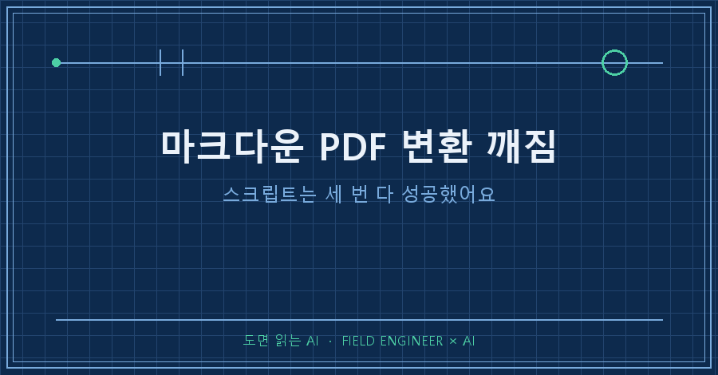
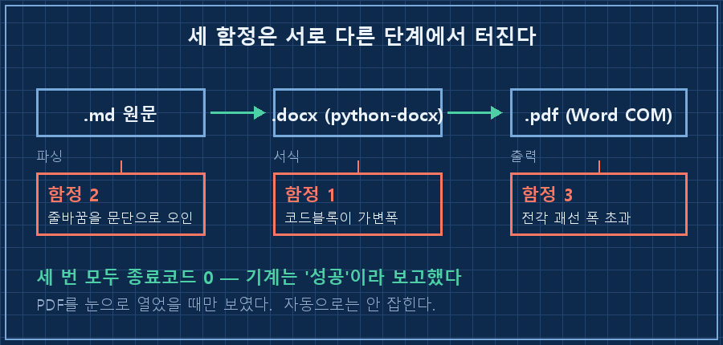
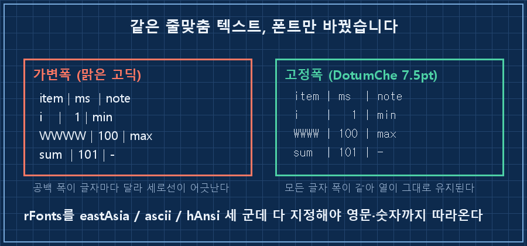
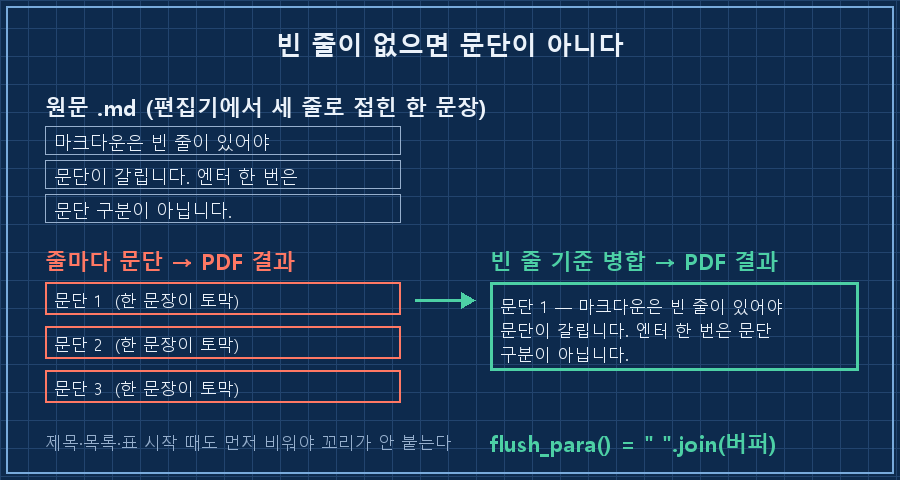

마크다운 PDF 변환 깨짐은 대부분 세 군데에서 납니다. 코드블록 폰트, 줄바꿈 처리, 전각 괘선 폭.
셋 다 잡았어요. 그런데 잡기 전까지 스크립트는 한 번도 에러를 내지 않았습니다. 종료코드는 계속 0이었고, 깨진 건 PDF를 열어봐야 보였어요.
제조 현장에서 제어·자동화로 15년 밥 먹은 사람이고, 요즘은 그 일 상당 부분을 AI랑 같이 굴립니다. 이번 건은 회사 일이 아니라 순전히 제 공부 채널 얘기예요.
4년 동안 쌓아둔 마크다운 문서가 500개가 넘는데, 태블릿에서는 .md가 그냥 텍스트 덩어리로 열립니다. 펜으로 밑줄 그으면서 읽으려면 PDF여야 했어요. 그래서 변환기를 직접 만들었고, 사흘 동안 버그 3건을 잡았습니다.
먼저 전제입니다. 2026년 9월 기준이에요.
| 항목 | 값 |
|---|---|
| OS | Windows 10/11 |
| 파이썬 | 3.12 |
| 라이브러리 | python-docx, pywin32 |
| 그 외 | MS Word 설치 필요 (PDF 내보내기에 Word COM 사용) |
| 변환 경로 | .md → .docx → .pdf |

왜 굳이 docx를 한 번 거치냐면, 폰트·표 스타일을 지정하는 코드가 이미 손에 있었기 때문입니다. 새로 배우는 시간보다 재활용이 빨랐어요.
코드블록이 계단처럼 흩어지는 이유는 뭔가요
고정폭 폰트를 안 줬기 때문입니다. 기본 본문 폰트(맑은 고딕)는 가변폭이라 글자마다 폭이 달라서, 공백으로 맞춰 그린 도형이 전부 어긋납니다.
제 첫 PDF에서 줄 맞춰 놓은 부분이 이렇게 됐어요. 왼쪽이 원문, 오른쪽이 가변폭으로 나간 결과입니다.
[원문] [PDF]
item | ms | note item | ms | note
i | 1 | min i | 1 | min
WWWW | 100 | max WWWW | 100 | max
sum | 101 | - sum | 101 | -i와 W의 폭이 다르니까 구분선 자리가 줄마다 밀립니다. 아스키로 그려둔 그래프도 같은 이유로 계단이 됐고요.
python-docx로 고치는데 한 가지 함정이 더 있었습니다. 폰트 이름을 한 군데만 지정하면 한글은 고정폭인데 영문·숫자가 딴 폰트로 빠집니다. 세 군데를 다 지정해야 해요.
r = p.add_run(text if text else " ")
r.font.name = "DotumChe" # 고정폭 + 한글 지원
r.font.size = Pt(7.5)
r._element.rPr.rFonts.set(qn("w:eastAsia"), "DotumChe")
r._element.rPr.rFonts.set(qn("w:ascii"), "DotumChe")
r._element.rPr.rFonts.set(qn("w:hAnsi"), "DotumChe")빈 줄에 " "(공백 한 칸)을 넣는 것도 의도입니다. 완전 빈 run은 줄 높이가 줄어서 블록 안 간격이 들쭉날쭉해지더라고요.
여기에 줄간격 1.0, 문단 앞뒤 여백 0을 같이 줘야 코드블록이 한 덩어리로 보입니다. 이 세 개를 안 주면 코드 한 줄 한 줄이 문단처럼 벌어져요.

한 문단이 줄마다 쪼개지는 건 왜 그런가요
마크다운은 빈 줄이 있어야 문단이 갈립니다. 그냥 엔터 한 번은 문단 구분이 아니에요.
제가 처음 짠 파서는 원문 한 줄을 그대로 docx 문단 하나로 만들었습니다. 그러니까 편집기에서 세 줄로 접혀 있던 한 문장이 PDF에서 문단 세 개가 됐어요. 읽는 리듬이 완전히 망가집니다.
해결은 버퍼예요. 빈 줄을 만날 때까지 모았다가 한꺼번에 배출합니다.
def flush_para():
"""줄바꿈으로 나뉜 한 문단을 합쳐서 배출."""
if not para_buf:
return
text = " ".join(para_buf).strip()
para_buf.clear()
if text:
d.add_paragraph(clean(text))주의할 게, 이 flush_para()는 빈 줄에서만 부르면 안 됩니다. 제목·목록·표·인용문이 시작되는 순간에도 먼저 비워줘야 해요. 안 그러면 앞 문단 꼬리가 다음 제목에 붙어 들어갑니다.

표랑 수식이 페이지 폭을 넘어갈 때는요
원인이 좀 얄궂습니다. 괘선 문자(─│┌) 같은 전각문자는 폭이 영문자의 2배예요. 편집기에서는 딱 맞아 보이는데 PDF로 나가면 오른쪽이 잘립니다.
두 가지로 나눠 처리했어요.
- 폰트를 8pt에서 7.5pt로 내렸습니다. 0.5pt 차이로 A4 폭 안에 들어왔어요.
- 긴 수식은 괘선 대신 ASCII 문자로 다시 썼습니다. 표로 그릴 건 마크다운 표(|)로 넘기고, 코드블록에는 도형만 남겼어요.
마크다운 표는 파싱할 때 두 가지를 챙겨야 합니다. 구분선 행(|---|---|)은 버려야 하고, 행마다 칸 수가 다를 수 있으니 가장 칸이 많은 행을 기준으로 열 개수를 잡아야 해요. 안 그러면 IndexError로 스크립트가 통째로 죽습니다.
여러분도 메모나 기록을 .md로 쌓아두고 계신가요? 파일이 백 개를 넘어가면 어디선가 한 번은 마크다운 PDF 변환을 붙이게 되는데, 그때 이 세 개는 거의 다 만나실 거예요.
세 번 다 종료코드 0이었습니다
여기가 이 글의 진짜 알맹이예요. 마크다운 PDF 변환 깨짐이 무서운 건 증상이 아니라 조용함입니다.
버그 3건 모두 스크립트가 정상 종료했습니다. 로그에도 아무 말이 없었고요. PDF 파일은 매번 만들어졌으니 기계 입장에선 성공이 맞습니다.
셋 다 PDF를 열어서 눈으로 봤을 때 발견했어요.
그래서 검증 기준을 바꿨습니다. 종료코드 0은 "파일이 생겼다"까지만 보증해요. 문서를 만드는 자동화는 종료코드가 아니라 산출물로 판정해야 합니다.
스케줄러에 걸 때도 한 번 더 걸렸습니다. 수동으로는 잘 돌던 게 무인 실행에서 실패했어요.
Task Scheduler
Last Run Result : 0x800700020x80070002는 파일을 못 찾았다는 뜻입니다. 등록할 때 실행 프로그램을 python이라고만 적었는데, 스케줄러가 도는 환경에서는 그 PATH가 안 잡혔어요. 파이썬 실행 파일 절대경로로 다시 등록하니 결과가 0으로 바뀌었습니다.
거기서 끝내지 않고 사흘을 지켜봤어요. 놓친 실행(NumberOfMissedRuns) 0, 결과 0. 그때 가동으로 인정했습니다.
제대로 됐는지 확인하는 순서
저는 이 순서로 봅니다. 위에서 하나라도 걸리면 아래는 볼 필요가 없어요.
| 순서 | 확인할 것 | 통과 기준 |
|---|---|---|
| 1 | PDF 파일이 생겼나 | 지정 폴더에 날짜 붙은 파일 존재 |
| 2 | 코드블록 열이 맞나 | 아스키 도형의 세로선이 일직선 |
| 3 | 문단이 온전한가 | 한 문장이 여러 문단으로 안 쪼개짐 |
| 4 | 오른쪽이 안 잘렸나 | 표·수식이 A4 폭 안에서 끝남 |
| 5 | 무인으로도 도나 | 결과 0 + 놓친 실행 0, 사흘 연속 |
2번부터 4번은 자동으로 못 잡습니다. 저는 그냥 PDF를 엽니다. 30초면 끝나는 일입니다!
미리 답해두는 질문 셋
Q. 고정폭 폰트는 꼭 DotumChe여야 하나요?
아니요. 한글이 섞인 코드블록이면 "한글을 지원하는 고정폭"이면 됩니다. 제가 이걸 고른 건 윈도우에 기본으로 있어서 배포할 때 폰트를 안 챙겨도 되기 때문이에요.
Q. Word 없이도 되나요?
제가 쓴 방식은 Word COM으로 PDF를 내보내니까 Word가 있어야 합니다. 다른 변환 경로는 제가 안 써봐서 된다/안 된다를 말할 수 없어요.
Q. 폰트만 고정폭으로 주면 코드블록이 예뻐지나요?
줄간격과 문단 여백을 같이 안 주면 안 예뻐집니다. 저는 폰트만 고쳐놓고 다 됐다고 생각해서 한 번 더 헛걸음했어요..
마지막으로 하나 솔직하게 붙입니다. 변환기 고쳐서 큐에 자료 30건을 채워 넣었는데, 읽은 건 0건이에요. 필기해서 돌려보낸 것도 0건입니다..
배급 속도가 문제가 아니라 제가 안 앉은 거죠. 이번 주에도 0이면 배급을 늘리는 대신 줄일 생각입니다. 만들어놓고 안 쓰는 자동화가 제일 비싸거든요.
다음 편 예고를 하나 붙이면, 오래된 자료를 순서대로 배급하는 규칙 얘기예요. "최근에 바뀐 것부터" 돌렸다가 빈 통을 돌린 사연이 같이 나옵니다.
이런 변환기 조각들은 makefield.ai에 쌓아두는데, 잘 돌아간 코드보다 헛걸음한 순서가 훨씬 길게 적혀 있습니다.